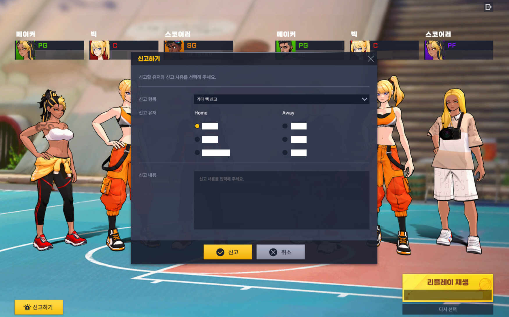
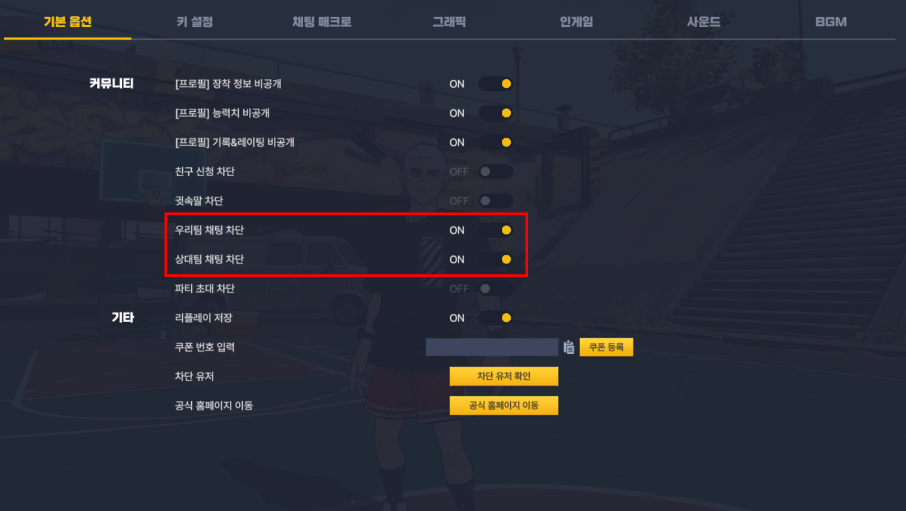
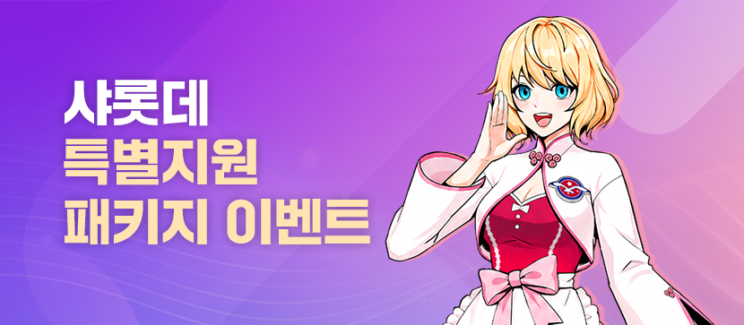
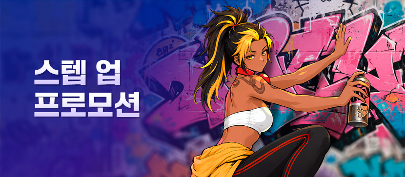

프리스타일: 리부트 정식출시 후기, 포지션공략까지 짚어본 농구게임
본 포스팅은 해당업체로부터 원고료를 지원받아 솔직하게 작성된 후기입니다. 본 게임은 확률형 아이템을 포함하고 있습니다. 조이시티의 3대3 농구 게임 '프리스타일: 리부트'가 지난 8월 13일에 정식으로 서비스를 시작했어요. 예전에 사전예약 소식을 한 번 전해드렸었는데, 그때 닉네임 선점 이벤트에 신청이 몰려서 홈페이지가 잠깐 접속 장애를 겪었을 정도로 관심이 뜨거웠고, 특히 예전 프리스타일을 즐기셨던 분들 사이에서 복귀 얘기가 많이 오갔다고 하더라고요. 이번 글도 직접 플레이해본 후기는 아니고, 출시 이후 나온 공식 업데이트 공지랑 이벤트 페이지를 쭉 살펴보면서 정리한 글이라는 점은 미리 말씀드릴게요.
프리스타일: 리부트, 진짜 출시됐어요
프리스타일: 리부트는 2026년 8월 13일부터 PC 온라인(Windows)으로 정식 서비스에 들어갔어요. 20년 넘게 이어온 원작 '프리스타일' IP를 신규 엔진으로 완전히 새로 지은 3대3 스트리트 농구 게임인데, 원작과는 완전히 별도로 운영되는 서비스라 기존 프리스타일 계정 데이터가 자동으로 넘어오지는 않아요. 서비스가 종료되고 리부트로 대체되는 구조가 아니라 지금도 둘 다 각자 운영 중이라는 점은 헷갈리지 않으셨으면 해요. 원작을 오래 기억하시는 분이라면 이 부분부터 짚고 시작하시는 게 좋을 것 같아요.
정식 서비스 중인 실제 매치 화면을 넣으면 좋은 자리예요.
8월 25일 업데이트로 뭐가 달라졌나요
8월 25일 업데이트에서는 신규 캐릭터와 아이템, 이벤트 보상, 밸런스 조정, 편의 기능이 한꺼번에 들어왔어요. 항목이 꽤 많아서 카테고리별로 나눠서 정리해볼게요.
캐릭터·아이템
- 생성·강화 조각이 추가된 신규 캐릭터 '언리밋 요시노'·'언리밋 수호'
- 데콘·폭시 등 스페셜 캐릭터 생성권/변경권 판매(변경권을 써도 포지션·강화 단계·훈련·스킬 같은 성장 정보는 그대로 유지)
- 신규 프리미엄 의상이 포함된 아이템 샵 신설
캐릭터 쪽은 신규 얼굴 두 명이랑 기존 인기 캐릭터의 생성권·변경권까지 한 번에 늘어난 느낌이라, 캐릭터 수집·꾸미기에 관심 있는 분들이 특히 반가워할 소식이에요.
이벤트·보상
- 업데이트 후 첫 접속 신규 유저 대상 '샤롯데 특별 지원 패키지' 지급
- '럭키 토큰 챌린지' 이벤트 신설(왕샤오링의 선물 이벤트는 이때 종료)
- 스텝 업 프로모션 종료일이 10월 1일에서 9월 8일 오전 9시 59분으로 변경
- 정기점검 보상 1만 포인트 + 연장점검 보상 4만 포인트, 합쳐서 총 5만 포인트 지급
밸런스·환경
- 박스아웃 경합·중립 상태 개선, 스크린 중립 상태 조정(몸싸움·스크린 판정 체감 보완)
- 코트 보조선 표시 추가, 관전 옵션에 타임라인 표시 신규
- 공 회전·중력·탄성, 카메라 시야 개선
이 대목은 화려한 변화라기보다, 플레이할 때 감각적으로 다가올 만한 잔손질에 가까워 보여요.
편의성·시스템
- 미션 '모두 받기', 익스프레스 패스 '일괄 받기' 버튼 추가
- 경기 종료 대기시간 9초 → 15초(대신 스킵 버튼 신설)
- 귓속말 기본값 '전체 차단' → '허용'으로 변경
- 스타일 라운지 전용 탭 추가, 상위 클럽 리스트 정렬 개선
- 캐릭터 삭제 시 기본 캐릭터 생성권 지급
- 다중 모니터 환경에서 해상도가 잘못 저장되거나 옵션 리스트가 안 바뀌던 문제 수정
여기에 8월 8~10일 사전 캐릭터 생성 기간에 만든 캐릭터라면 기본 능력치 의상·장신구를 받았고, 8월 13일부터 18일 19시 이전에 획득한 분량은 능력치 강화판을 계정 선물함으로 따로 받았다고 해요(기존 아이템 회수는 없었고요). BM 개편 후속으로 환불·케어보상 절차도 8월 25일 정기점검 이후 순차로 진행됐고, 강제종료가 쌓이던 '강종 포인트'도 이때 초기화됐어요.
신규 캐릭터·아이템 소개 화면을 넣으면 좋은 자리예요.
9월 1일 업데이트도 이어졌어요
네, 오늘(9월 1일) 자로 업데이트가 하나 더 있었어요. 이번엔 신고 기능이랑 채팅 관련 옵션을 다듬는 데 초점이 맞춰진 느낌이에요.
- 리플레이 신고 기능 신설 — 리플레이를 재생한 뒤 신고 버튼을 누르면 불법 프로그램·매크로 의심·욕설 등을 신고할 수 있어요
- 인게임 채팅 차단 세분화(앞서 말한 귓속말 설정과는 별개인 항목이에요) — '우리팀 채팅'·'상대팀 채팅'을 따로 차단할 수 있고, 기본값이 '전체 차단'으로 바뀌었어요(경기 중 Insert 키로 토글)
- 불법 프로그램·매크로 사용 의심 탐지 시스템 강화(2종)
- 인터셉트·리바운드 등 특정 상황에서 공이 끼이던 버그 수정
- 9월 1일 점검 이후 만든 신규 계정 대상 '샤롯데 특별 지원 패키지' 보상 상향
이번 업데이트는 새 기능을 늘리기보다, 있던 시스템을 더 안전하고 편하게 다듬는 쪽에 무게가 실린 것 같아요.
여기에 케어 보상이랑 공략왕 이벤트 1~2주차, 슈퍼플레이 쇼츠 챌린지 2주차, 조코피TV컵 예측 이벤트 보상도 이번에 지급이 완료됐고, 잘못 지급됐던 재화는 회수 처리됐다고 해요.

리플레이 재생 화면에서 신고 항목·대상 유저를 골라 접수하는 신고하기 창이에요.
이미지 출처: 프리스타일: 리부트 공식 업데이트 공지

'우리팀 채팅 차단'·'상대팀 채팅 차단'을 따로 켜고 끌 수 있게 된 설정 화면이에요.
이미지 출처: 프리스타일: 리부트 공식 업데이트 공지
리부트에서 실력이 진짜 중요해진 이유
리부트는 계정 성장보다 조작 숙련도나 상황 판단이 승패를 더 크게 가르는 쪽으로 설계했다고 공식 채널이 밝히고 있어요. 실제로 공지·이벤트 페이지를 짚어보면 이런 부분들이 눈에 띄어요.
- 실력 중심 경쟁 구조 — 패스·슛·리바운드·스틸 같은 기본기와 포지션 이해, 팀워크가 핵심이고 과금이 경기 결과를 일방적으로 정하지 않는 방향이라고 공식이 설명해요
- 신규 유저 진입장벽 완화 — 경험 수준에 맞는 초반 동선을 두고, AI전으로 기본 조작과 흐름을 먼저 익힌 뒤 PvP로 넘어가는 구조
- 레이팅 기반 매칭 — 계정 레벨이 아니라 실제 경기 내용·결과를 기준으로, 비슷한 실력대끼리 우선 매칭(신규 캐릭터도 기존 기록이 반영됨)
- 복귀 유저 배려 — 오래 이어진 서비스라 복잡해진 시스템·진입장벽을 그래픽·캐릭터·성장·매칭·동선까지 전반적으로 다시 설계하되, 원작 감성은 그대로 남겨둔 방향
레이팅 기반으로 매칭되는 화면을 캡처해서 넣으면 좋은 자리예요.
포지션 다섯 개, 초반엔 뭐부터 봐야 하나요
리부트 포지션은 센터(C)·파워포워드(PF)·스몰포워드(SF)·슈팅가드(SG)·포인트가드(PG) 다섯 개예요. 리부트는 조작 숙련도·상황판단·포지션 이해·팀워크가 중요한 구조라, 출시 초반엔 특정 세팅보다 패스·공간활용·수비·리바운드 같은 기본기를 우선하는 게 유리해 보여요. 아래는 원작 경험이랑 이번 자료를 참고해서 정리해본 신규 유저 초반 플레이 방향인데, 실제 판단은 참고 정도로만 봐주시면 좋겠어요.
- 팀원한테 공이 갔을 땐 바짝 붙지 말고 한 발짝 떨어져서 공간부터 잡아두기
- 패스한 뒤엔 빈 공간으로 이동해서 새 패스길을 만들기
- 수비가 붙으면 무리하게 슛을 쏘기보다 한 번 더 돌려 노마크 찬스를 만들기
- 상대 페이크에 일일이 반응하기보다 확실한 타이밍만 골라서 움직이기
- 빅맨은 슛 올라가는 타이밍에 맞춰 리바운드 자리로, 외곽 포지션은 흘러나오는 루즈볼부터 챙기기
다섯 포지션을 한눈에 보여줄 수 있는 자리예요.
1. 센터(C) — 골밑 수비랑 리바운드를 최우선으로 챙기는 자리라고 판단해요. 상대 빅맨보다 먼저 자리를 선점하는 게 관건이고, 무리하게 블락을 노리기보다 골밑을 비우지 않는 안정적인 수비가 더 유리해 보여요. 공격에서는 페이크랑 패스를 섞어서 상대 블락 타이밍을 흔드는 쪽으로 풀어가는 게 나을 거라고 봐요.
2. 파워포워드(PF) — 덩크·레이업으로 득점하면서 리바운드까지 겸하는 공격형 빅맨 포지션이라고 생각해요. 덩크만 반복하기보다 레이업·페이크를 섞어서 패턴을 분산시키는 게 나아 보이고, 수비에서는 센터랑 같이 리바운드·골밑 도움수비를 맡는 게 자연스러워요. 원빅 조합으로 갈 땐 개인 득점보다 안정성을 우선하는 편이 나을 듯해요.
3. 스몰포워드(SF) — 미들슛을 중심으로 한 올라운드 포지션이라고 봐요. 패스를 받은 직후엔 거리를 벌려서 미들 찬스를 만들고, 수비가 붙으면 페이크·돌파·패스로 상황을 전환하는 게 유리해 보여요. 드리블을 길게 끌기보다 짧게 움직여서 노마크 상황을 만드는 쪽이 초반엔 안정적일 것 같아요.
4. 슈팅가드(SG) — 3점을 중심으로 외곽 득점을 노리는 자리죠. 계속 움직여서 수비랑 거리를 벌리는 게 핵심이고, 무리한 3점보다는 재이동 후 다음 찬스를 노리는 편이 낫다고 판단돼요. 결국 노마크 3점 상황을 반복적으로 만들어내는 게 이 포지션의 핵심인데요.
5. 포인트가드(PG) — 직접 득점보다 패스랑 움직임으로 팀을 조율하는 역할에 가깝다고 봐요. 공을 받으면 일단 빠르게 패스부터 하고, 그다음 빈 곳으로 움직여서 다시 패스를 받을 자리를 잡는 식으로 계속 반복하는 게 기본이고, 주득점원한테 몰아주기보다 노마크 선수를 빠르게 연결하는 판단이 더 유리해 보여요. 스틸을 남발하기보다 상대 앞을 지키면서 루즈볼 회수에 참여하는 편이 안정적이지 않을까 싶어요.
| 포지션 | 핵심 롤 | 초반 우선순위 |
|---|---|---|
| 센터(C) | 골밑 수비·리바운드 | 자리 선점, 무리한 블락 자제 |
| 파워포워드(PF) | 골밑 득점·보조 리바운드 | 덩크·레이업 분산 |
| 스몰포워드(SF) | 미들슛 올라운드 | 거리 확보 후 미들 찬스 |
| 슈팅가드(SG) | 3점 외곽 득점 | 지속 이동으로 노마크 창출 |
| 포인트가드(PG) | 패스·조율 | 빈 공간 연결 우선 |
지금 진행 중인 이벤트, 뭐가 있나요
리부트에서 9월 1일 기준으로 진행 중인 이벤트는 총 9개예요. 확인해보니 여러 이벤트가 동시에 진행되고 있더라고요. 종료일이 임박한 것도 있으니 참고하시면 좋을 것 같아요. 그중에서도 슈퍼플레이 쇼츠 챌린지가 9월 2일까지라 가장 코앞이에요.
| 이벤트 | 기간 |
|---|---|
| 슈퍼플레이 쇼츠 챌린지 | 8.13 ~ 9.2 |
| 샤롯데 특별 지원 패키지 | 8.25 ~ 9.30 |
| 럭키 토큰 챌린지 | 8.13 ~ 9.23 |
| 스텝 업 프로모션 | 8.13 ~ 9.8 |
| 공략왕 이벤트 | 8.13 ~ 9.9 |
| 첫 충전 선물 | 8.13 ~ 9.13 |
| 일일·주간 미션 | 8.13 ~ 10.29 |
| 플레이어 라운지 | 8.18 ~ 9.20 |
| AI 레벨 브레이크 | 8.13 ~ 9.24 |

샤롯데 특별 지원 패키지는 신규 계정 지원 성격이 강한 이벤트예요.
이미지 출처: 프리스타일: 리부트 공식 이벤트 페이지
그리고 하나 더 챙길 이벤트가 있는데요, 스텝 업 프로모션도 놓치지 않으면 좋겠어요.

스텝 업 프로모션은 9월 8일 오전 9시 59분에 종료돼요.
이미지 출처: 프리스타일: 리부트 공식 이벤트 페이지
참고로 8월 31일까지 진행됐던 '주말엔 프리스타일' 이벤트는 이미 종료됐으니 헷갈리지 않으시면 좋겠어요. 지금 시작하시는 분들은 위 이벤트 중에 종료일이 가까운 것부터 챙기시는 게 좋을 것 같아요.
프리스타일: 리부트 다운로드는 공식 홈페이지의 클라이언트 다운로드 페이지에서 받으실 수 있어요.
자주 묻는 질문
Q. 쿠폰 코드는 어디에 입력하나요?
게임 내 설정(톱니바퀴) 화면 기본 옵션 하단에 '쿠폰 번호 입력'란과 등록 버튼이 있어요. 클립보드 아이콘도 같이 있어서 복사해둔 코드를 바로 붙여넣을 수 있는 구조예요.
Q. 리플레이 신고는 실제로 어떻게 하나요?
매치가 끝난 뒤 리플레이를 재생하고 화면의 신고하기 버튼을 누르면, 신고 항목(기타 핵 신고 등)이랑 홈·어웨이 중 누구를 신고할지 고르는 창이 뜨고, 신고 내용을 직접 적어서 접수하는 방식이에요.
프리스타일: 리부트 정리
정리하면, 프리스타일: 리부트는 8월 13일 정식 출시 이후 8월 25일·9월 1일 두 차례 업데이트를 거치면서 캐릭터·이벤트·밸런스·편의성을 계속 다듬어가고 있는 상태예요. 계정 성장보다 실력·판단이 승패를 가르는 구조로 설계됐다고 판단되는 만큼, 다들 기본기부터 다시 시작하는 지금이 오히려 실력 격차가 가장 적은 시기일 수 있어요. 레이팅 매칭 덕분에 초보자도 비슷한 실력대끼리 붙게 되고, 예전 프리스타일을 하셨던 분이라면 원작 감성은 유지하면서 훨씬 정돈된 환경에서 다시 시작할 수 있고요. 신규 유저는 AI전부터 차근차근 익히다가 PvP로 넘어가는 동선이 마련돼 있으니 부담 없이 도전해보셔도 될 것 같아요. 랭킹 모드 중심의 지속적인 경쟁, 신규 캐릭터 주기적 업데이트, 토너먼트 같은 참여형 콘텐츠까지 계획돼 있다고 하니 장기적으로 붙잡고 해볼 만한 농구 게임 추천작이라고 생각해요.
✔ 프리스타일: 리부트 같이 보기 좋은 내용
· 프리스타일: 리부트 사전예약 편에서 쇼케이스 영상·사전예약 보상·포지션 소개 같은 출시 전 이야기를 더 자세히 다뤘어요(네이버 블로그 글 주소를 직접 연결해 주세요)
참고한 곳
· 프리스타일: 리부트 공식 9월 1일 업데이트 공지
· 프리스타일: 리부트 공식 이벤트 페이지
· 프리스타일: 리부트 공식 다운로드 페이지